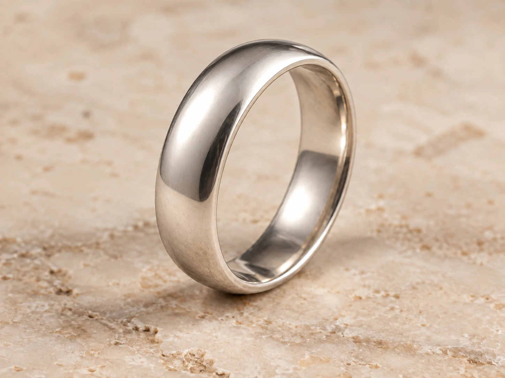
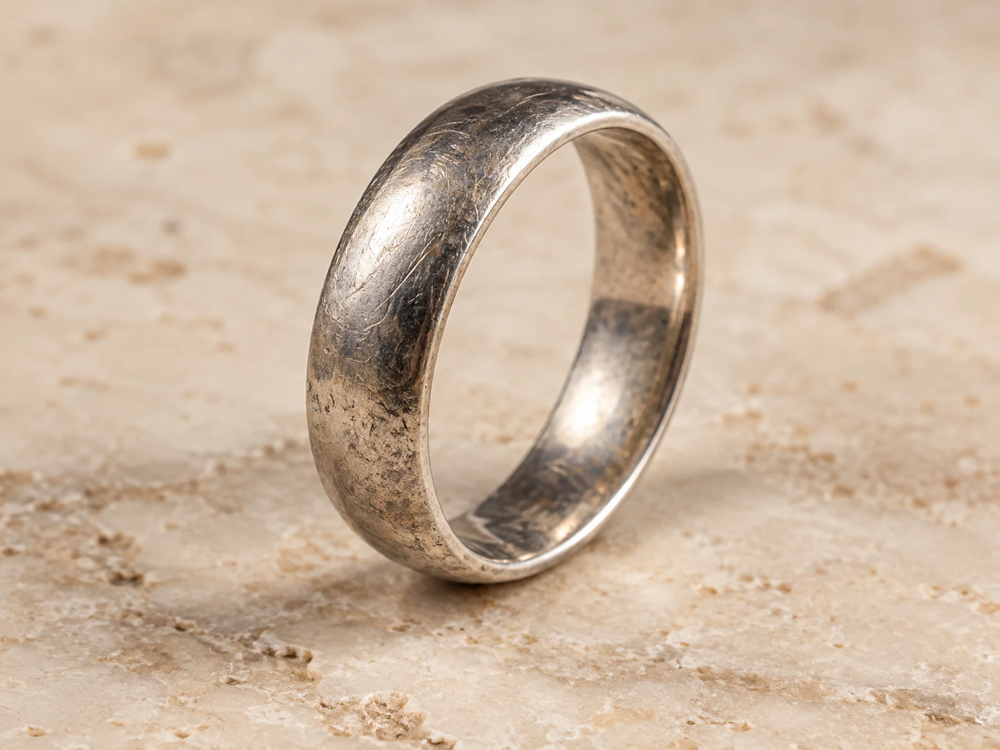

Há histórias
que merecem
continuar.
Restauração, conserto e criação de joias.
O cuidado de hoje com o que importa para sempre.
Cada joia pede
um cuidado único.
Do reparo de uma peça querida à criação de um novo significado. Encontre o serviço que faz sentido para você.
A beleza permanece.
O cuidado a revela.
Peças que guardam lembranças merecem uma nova chance. Avaliamos o material, o estado da joia e o reparo indicado para preservar o que a torna especial.
Solicitar avaliação- Restauração de joiasRecuperação de peças marcadas pelo tempo
- Conserto de correntes e fechosReparos conforme o material e a estrutura
- Limpeza e polimentoCuidado com a superfície e o acabamento
Um momento seu.
Uma joia também.
Uma escolha de vida, uma conquista ou uma ideia que merece sair do papel. Conversamos sobre modelo, medidas, materiais e acabamento para criar a sua peça.
Conversar sobre minha ideia- Fabricação de aliançasUm símbolo para a história de vocês
- Anéis de formaturaUma conquista transformada em joia
- Peças personalizadasProjetos e possibilidades sob avaliação
O detalhe faz
toda a diferença.
Consulte a possibilidade de ajustar uma peça, personalizar uma mensagem ou cuidar da fixação de uma pedra. Cada intervenção começa pela avaliação da joia.
Consultar possibilidades- Ajuste de aroAumento ou redução, conforme a peça
- Gravação personalizadaNomes, datas e mensagens — consulte
- Revisão de cravaçãoAvaliação da fixação e de possíveis reparos
Precisão também
nos pequenos cuidados.
Além da joalheria, realizamos amolação de alicates. Fale com a Casa para consultar o atendimento e receber orientações para o seu item.
Consultar amolação- Amolação de alicatesConsulte os modelos atendidos
- Orientação de conservaçãoCuidados adequados ao material da sua joia
O tempo passa.
O significado fica.
Uma superfície renovada, a mesma história. Veja como o cuidado com o acabamento pode transformar a aparência de uma peça.
Arraste a divisão para comparar.
Quero cuidar da minha joia

De pai para filho.
Da chama
à forma.
Mais de 30 anos de experiência em um ofício que se aprende com as mãos. Na Casa Elo, esse conhecimento encontra uma nova forma de continuar.
O domínio da técnica dá forma a cada detalhe.
O OFÍCIO, EM CADA DETALHESua próxima história
começa com uma conversa.
Envie uma foto da sua peça ou conte o que você quer criar.
A Casa Elo ajuda você a entender as possibilidades.
Feito com cuidado.
De Caldas Novas para o Brasil.
- Atendimento
- Caldas Novas · Goiás
- (64) 99285-1597
- Envio de peças
- Para todo o Brasil.
Combine os detalhes pelo WhatsApp.